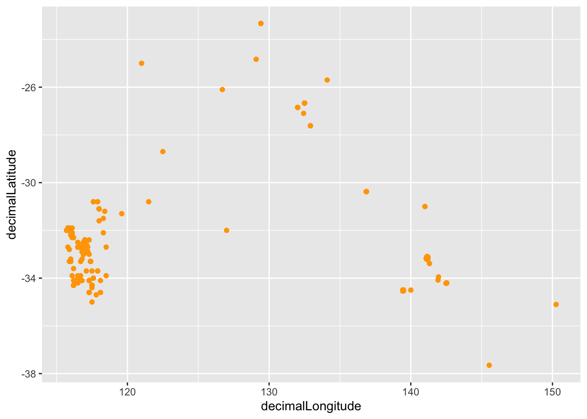
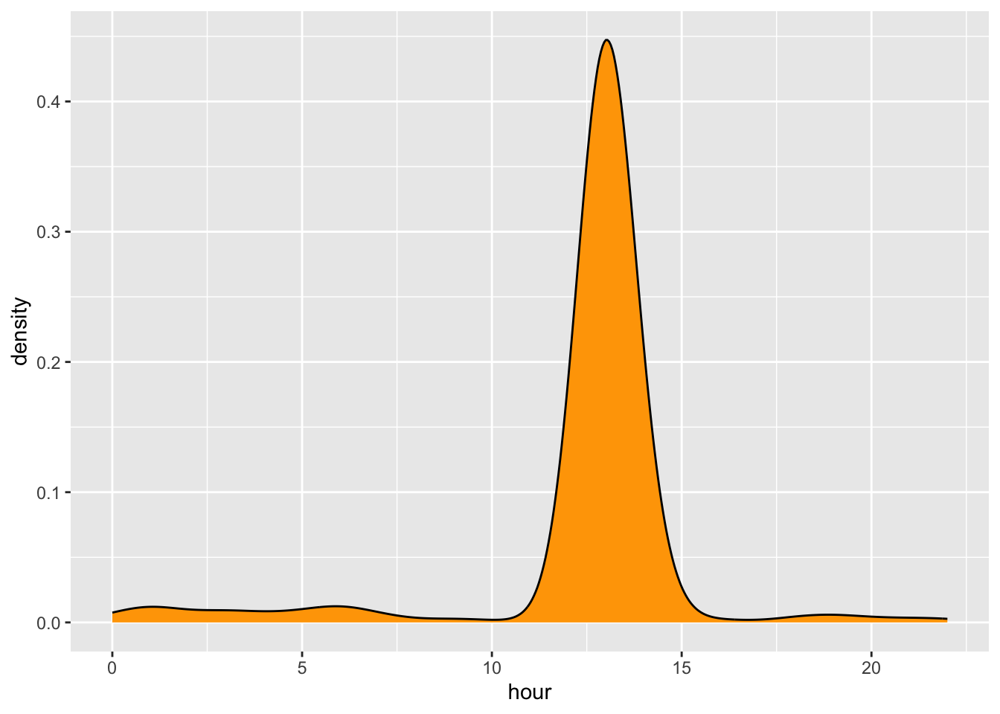
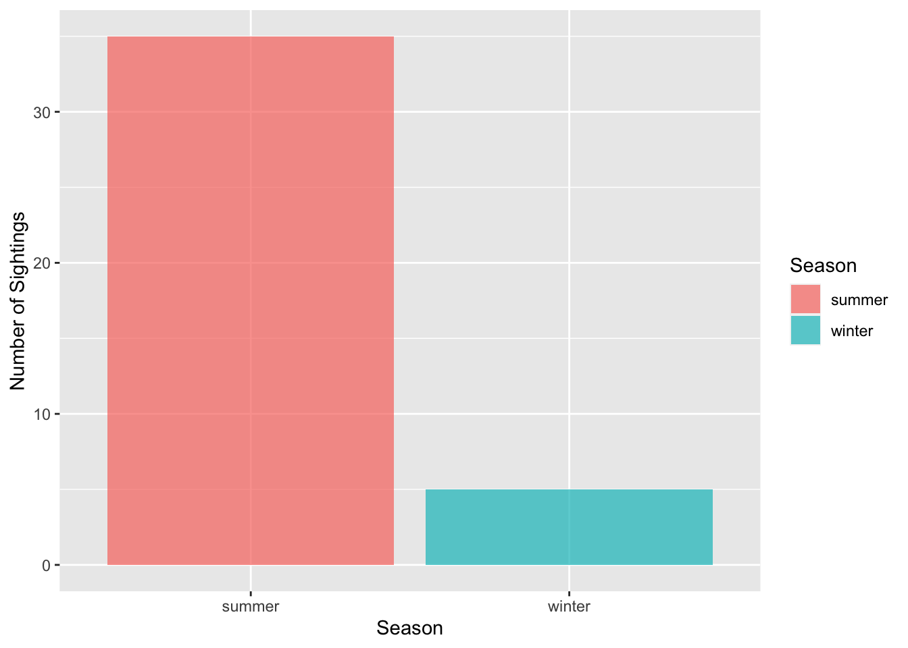
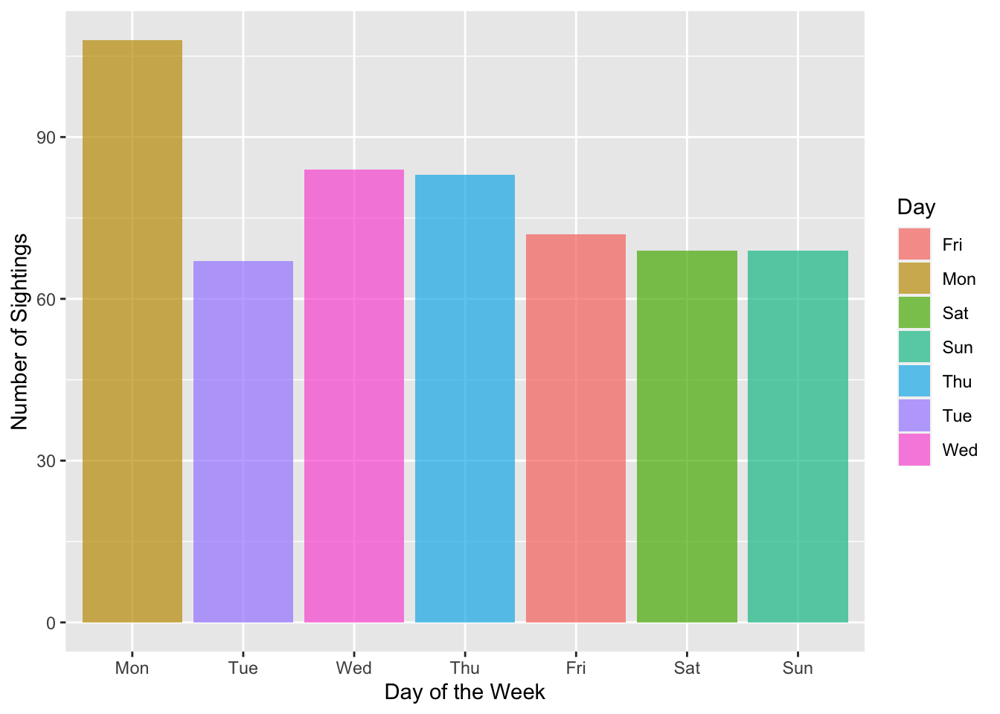

A few months ago, we spent some time in class talking about numbats, a very interesting looking marsupial species that is native to Australia and currently considered to be endangered. Today, I’m going to answer some questions about them by analyzing a dataset containing information on numbbat sightings.
The Tidy Tuesday data I’ll be working with is linked here: https://github.com/rfordatascience/tidytuesday/blob/master/data/2023/2023-03-07/readme.md
library(tidyverse)
tuesdata <- tidytuesdayR::tt_load(2023, week = 10)##
## Downloading file 1 of 1: `numbats.csv`numbats <- tuesdata$numbatsThe data actually comes with some questions that I’m going to try to answer. No guarantee I’ll get all of them, but it’ll be fun to try.
The data include longitude and latitude info, so we can just plot those against each other to see where numbats have been sighted in Australia:
numbats %>%
ggplot(aes(x = decimalLongitude, y = decimalLatitude)) +
geom_point(color = "orange")## Warning: Removed 83 rows containing missing values (`geom_point()`).
This by itself isn’t incredibly intuitive, but I can’t seem to get the points to cleanly superimpose over a map of Australia. I’ve checked though, and the sightings do span the entirety of the country.
A density plot of the “hour” variable should tell us!
numbats %>%
ggplot(aes(x = hour)) +
geom_density(fill = "orange")## Warning: Removed 253 rows containing non-finite values (`stat_density()`).
numbats %>%
drop_na(hour)%>%
summarize(mean(hour))## # A tibble: 1 × 1
## `mean(hour)`
## <dbl>
## 1 12.4Looks like they come out just after noon!
In Australia, summer covers the months of December, January, and February, while winter ranges from June to August. Lets use that knowledge to slice and dice this dataset the way we want:
#Processing
numbats_szns <- numbats %>%
filter(month == c("Dec","Jan", "Feb", "Jun", "Jul", "Aug")) %>%
mutate(season = case_when(month == "Dec" ~ "summer",
month == "Jan" ~ "summer",
month == "Feb" ~ "summer",
month == "Jun" ~ "winter",
month == "Jul" ~ "winter",
month == "Aug" ~ "winter",))## Warning: There was 1 warning in `filter()`.
## ℹ In argument: `month == c("Dec", "Jan", "Feb", "Jun", "Jul", "Aug")`.
## Caused by warning in `month == c("Dec", "Jan", "Feb", "Jun", "Jul", "Aug")`:
## ! longer object length is not a multiple of shorter object lengthnumbat_szns_counts <- numbats_szns %>%
group_by(season) %>%
summarize("count" = n())
# Visualization
numbats_szns %>%
ggplot(aes(x = season, fill = season)) +
geom_histogram(stat = "count", alpha = 0.7)## Warning in geom_histogram(stat = "count", alpha = 0.7): Ignoring unknown
## parameters: `binwidth`, `bins`, and `pad`
Looks like numbat sightings are pretty substantially more common in the summer!
This should also be pretty straightforward as well:
numbats %>%
drop_na(wday) %>%
ggplot(aes(x = factor(wday, level = c("Mon", "Tue", "Wed", "Thu", "Fri", "Sat", "Sun")), fill = wday)) +
geom_histogram(stat = "count", alpha = 0.7)## Warning in geom_histogram(stat = "count", alpha = 0.7): Ignoring unknown
## parameters: `binwidth`, `bins`, and `pad`
Seems like they like weekdays, and particularly Mondays!